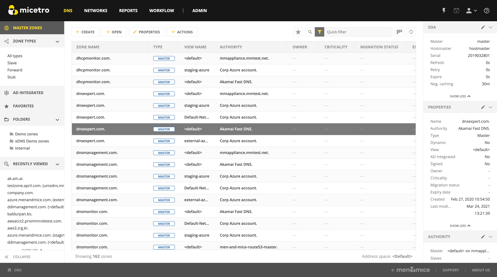

DNS management
DNS Zones
Here is an overview of the main functionality for managing DNS zones.
By default, the list shows only master DNS zones, but to see other types of DNS zones, the filtering sidebar offers options to select different types.
{kind=link}
Viewing the DNS zone list
After entering the DNS section of the Web Application, users are presented with a list of all DNS zones in the system that they have access to view.
Opening a DNS zone
Opening a DNS zone can either by done by
selecting the zone in the zone list and clicking on the Open button in the task bar above the zone list; or
double clicking on the zone.
Creating a DNS zone
Creating a new DNS zone can be done by clicking on the Create button above the DNS zone list. From the dropdown, select the zone type (Master, Slave, Stub, or Forward).
The following dialog presents the options for the operation:
{kind=link}
Item |
Description |
|---|---|
Zone name |
The name of the DNS zone to be created as a fully qualified domain name (FQDN) |
Master server |
Specifies the server which will act as the master server for the DNS zone |
Slave servers |
Specify which server(s) should act as slave servers for the DNS zone |
Open zone after creating |
If checked, the DNS zone will be opened right after it has been created |
Save comment |
Allows users to write a comments to save for audit trail purposes. |
Editing zone Properties
Any custom properties that have been defined for DNS zones can be added and edited here.
Deleting a zone
Select the zone to be deleted and click on the Delete zone action in the action part of the Inspector on the right hand side.
Migrating a DNS zone
A DNS zone can be migrated between DNS servers.
{kind=link}
Select the DNS zone in the list and run the Migrate zone action.
Specify the destination server. This is the server for which the DNS zone will be migrated to.
After migrating, you are presented with a dialog which confirms a successful zone migration.
Promoting a secondary zone
You can select a secondary (slave) DNS zone and promote it to primary (master) using Promote to master from the selected zone(s)’s ellipsis menu. The confirmation dialog will also offer the ability to automatically update the SOA record’s master record. (Default: true.)
DNS Records
After having opened a DNS zone, it is possible to:
Add DNS records
Edit DNS records
Delete DNS records
Disable DNS records
The Inspector for DNS records allows the following actions and details for each selected DNS record in the DNS zone list.
Item |
Description |
|---|---|
Actions |
Lists all available actions for the selected record |
Properties |
Lists the properties for the selected DNS record |
Related DNS Data |
Lists all related DNS records for the selected DNS record. Related DNS records all DNS records that are somehow associated with the specified record. |
Related IP address |
List the related IP address in case of an A or AAAA DNS record. |
Creating a new DNS record
Note
For importing DNS records in bulk, see Import DNS Records.
To create a new DNS record, either click on the Create button in the main task bar or click on from the top menu or in the Inspector.
The following dialog presents the options for the operation:
{kind=link}
Available record types are:
A / AAAA
MX
TXT
NS
SOA
SRV
HINFO
CNAME
TLSA
CAA
CERT
WKS
RP
AFSDB
LOC
SSHFP
SPF
DNSKEY (read only)
NSEC (read only)
NSEC3 (read only)
NSEC3PARAM (read only)
RRSIG (read only)
DS
DLV (read only)
New DNS records can be added by filling out the required data and additionally custom fields if there are any.
For A records, there is useful autocomplete behavior that can help finding a free IP address in a network.
Typing in the first digits of a network will allow you to see a list of networks to choose from.
{kind=link}
Selecting the first item from the list will fill in the Address field with the next free IP address from that network. Additionally, insights for the specified IP address will be shown.
After typing in an IP address or selecting from the list, an indicator will be given on the state of the IP address, whether it is Free, Reserved, Claimed or Assigned.
{kind=link}
IP Address Insights
The IP address insights feature aims to give details on the IP address and related objects.
Typing in the full IP address in the the Address field will indicate the state of the IP address. Additionally, the IP insights are shown, which are details on the IP address itself and related objects.
{kind=link}
Hovering over the i icon will list further information or show a list of objects:
Network will show more details on the network.
Properties will show a list of all defined properties for the specified IP address.
DNS hosts will show a list of all defined DNS hosts for the specified IP address.
MAC address will show a list of additional MAC information for the specified IP address.
Last seen will show a list of additional information for the specified IP address.

{kind=link}
{kind=link}
Network |
The network containing the specified IP address |
Network type |
Either an IP address range or a DHCP scope |
Properties |
Various properties including custom properties, if defined. |
DHCP client |
|
DNS hosts |
Lists all DNS hosts that are set for the specified IP address |
MAC address |
The MAC address of the discovered device |
Last seen |
The date for which the IP address was last seen |
Time to live (TTL)
Throughout the system, the TTL value can either be specified in seconds or using the shorthand notation, such as
- 1s:
1 second
- 1m
1 minute
- 1h
1 hour
- 1d
1 day
- 1w
1 week
Editing a DNS record
Select the DNS record in the DNS record list
Either click Edit in the main task bar, or click on Edit DNS record in the Inspector actions.
A dialog is displayed which allows you to modify the DNS record
Click Save to persist the changes.
Deleting a DNS record
Select the DNS record in the DNS record list
Click on Delete in the main task bar or click on Delete DNS record in the Inspector actions.
Users will be prompted before the record(s) are deleted
Disabling a DNS record
Select the DNS record in the DNS record list
Click on Disable DNS record in the Inspector actions.
Users will be prompted before the record(s) are disabled